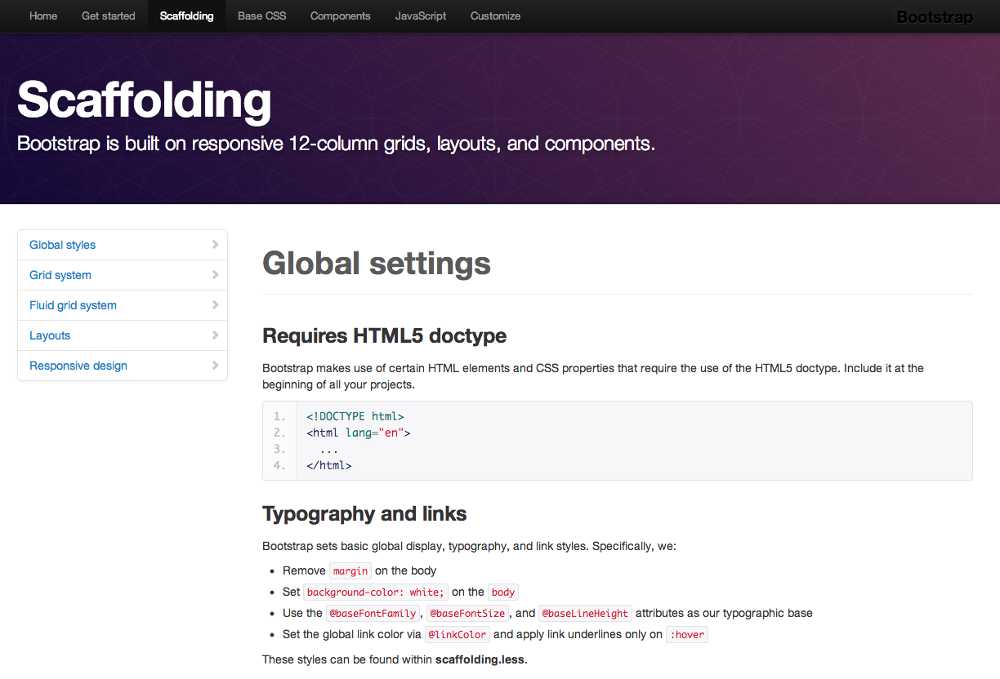

U żywalność
Plan
- Czym jest używalność?
- Garść wiedzy podstawowej
- Jak tworzyć?
- Jak badać?
Cel
zainteresować dziedziną
i
uświadomić jej znaczenie
I
Czym jest używalność?
Zagadka

Używalność
jest ważna!
Skąd nazwa?
-
używalny – usable
możliwy do wykorzystania, wygodny w użyciu
-
≠
-
użyteczny – useful
przynoszący pożytek, potrzebny do czegoś
User-Centered Design
Web Usability
II
Garść wiedzy podstawowej
Użytkownicy
- nie lubią myśleć
- kierują się intuicją
- wybierają to, co satysfakcjonujące
- są niecierpliwi
91% osób poddaje się po maksymalnie 3 nieudanych próbach wykonania czynności na stronie WWW. Empirix, 2006
- nie czytają, a skanują wzrokiem
- tylko niektóre fragmenty
- nie widzą reklam – szczególnie, gdy
- migają, hałasują, pląsają!
- mają swoje zadania i intencje
- nie lubią, jeśli się im przeszkadza
Standardy
Starsze niż Internet...
- typografia
- dziennikarstwo
- bibliotekoznawstwo
Użytkownicy je lubią
- pozwalają nie myśleć
- przyspieszają naukę
- ułatwiają korzystanie
Przykłady
Warto korzystać
z doświadczenia innych nauk.
Tylko wyjątkowe sytuacje
wymagają wyjątkowych rozwiązań.
Nawigacja
Nawigacja informuje
- gdzie jesteśmy
- gdzie możemy iść
- gdzie byliśmy
Nawigacja
- daje poczucie stabilności i orientacji
- uspokaja użytkownika
Przykłady
Sekcje, podsekcje
Nawigacja okruszkowa
(breadcrumbs)
Tagi, chmury tagów
Linki w treści
Wyszukiwanie
Wyszukujemy, gdy
- nie udało się znaleźć samemu
- wiemy czego potrzebujemy
- potrzebujemy tego szybko
Chcemy wyszukiwać
- szybko
- trafnie
Wyszukiwarka
- jasny zakres wyszukiwania
-
prostota
Wyszukaj słowa kluczowe
- wyszukiwanie zaawansowane?
- raczej filtrowanie wyników
Formularze
Zasady
-
Less is more!
- grupowanie
- podział procesu na kroki
- pola obowiązkowe – jak najmniej
Zasady
- rozmiary i odstępy pól
- etykiety pól – umiejscowienie
- formaty danych – nieograniczanie użytkownika
- nieprawidłowe dane – informowanie
Obsługa błędów
Odpowiednie
- miejsce
- czas
- treść
- forma
Miejsce
- obok pola, którego dotyczy
- u góry strony
Czas
- natychmiast, gdy stwierdzony!
Treść
- Co się stało?
- Z czyjej winy?
- Co mogę teraz zrobić?
Forma
- uspokajająca i życzliwa
- język zrozumiały dla użytkownika
- czerwony kolor, odpowiednia ikona
Dostępność
(accessibility)

Kolor
7–10%
błędnie rozróżnia czerwony-zielony
Kontrast
Kontrast
Kontrast
Ostrość widzenia
|
krój i rozmiar fonta krój i rozmiar fonta krój i rozmiar fonta krój i rozmiar fonta krój i rozmiar fonta krój i rozmiar fonta krój i rozmiar fonta |
krój i rozmiar fonta krój i rozmiar fonta krój i rozmiar fonta krój i rozmiar fonta krój i rozmiar fonta krój i rozmiar fonta krój i rozmiar fonta |
CAPTCHA
III
Jak tworzyć?
Architektura Informacji
Wywiady
Wywiady grupowe
(focus groups)

Sortowanie kart
Mapy myśli
Prototypowanie
Makiety papierowe
Wireframes & Mock-ups
Prototypy
Persony
IV
Jak badać?
Statystycznie
Ankiety
Odwiedziny i zachowania
Mapy kliknięć
(clicktracking)
Testy A/B
Zalety i wady
podejścia statystycznego
Jednostkowo
Obserwacja
(usability testing)
Analiza nagrań
Wywiady
Okulografia
(eyetracking)
Zalety i wady
podejścia jednostkowego
Prawie koniec...
Aby projektować systemy dla człowieka,
musimy na nie spoglądać jego oczami
na każdym etapie procesu ich powstawania.